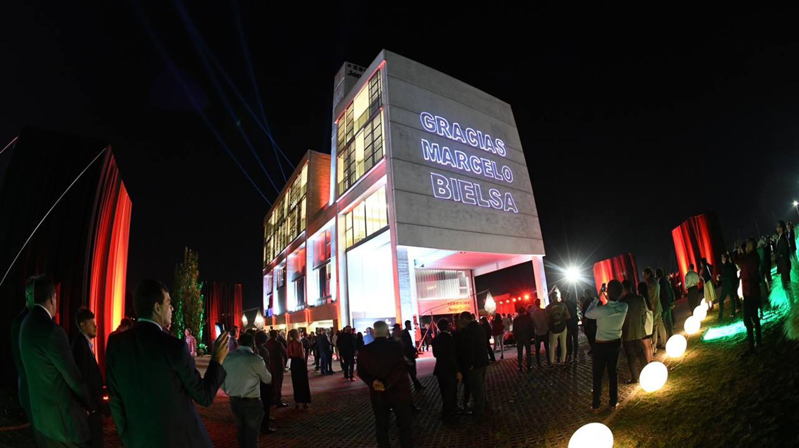

Estadio coloso Marcelo Bielsa
El 23 de julio de 1911, Newell's Old Boys inauguró su estadio ubicado en el Parque Independencia, corazón de la ciudad de Rosario. Desde entonces, más de cien años han transcurrido y Newell's está definitivamente instalado en el Parque Independencia, espacio que lo identifica y donde transcurrió prácticamente toda su vida. Aquello que comenzó con una tribuna de madera se fue consolidando y tuvo diversos avances sociales y constructivos que permiten en la actualidad de disfrutar del Estadio "Marcelo Alberto Bielsa" tal como lo conocemos hoy en día.Desde la recuperación de la democracia, en diciembre de 2008, el estadio continuamente está en proceso de mejoras, en diversos sectores. A finales del 2009, con el voto masivo de los hinchas, se nombró formalmente al estadio como "Marcelo Alberto Bielsa" y a la histórica platea oeste, la visera, como "Gerardo Daniel Tata Martino". Ambos representan cabalmente la identidad recuperada por la institución, que luce orgullosa sus nombres en el estadio.Escenario de hazañas y páginas gloriosas, el Estadio "Marcelo Alberto Bielsa" emplazado en el corazón de la ciudad, ofrece las comodidades para eventos deportivos del más alto nivel.

Centro de alto rendimiento en Bella Vista
El Centro Griffa cuenta con más de diez canchas de fútbol en excelentes condiciones, en las que practican la primera división y todas las categorías de las divisiones juveniles que compiten en torneos de la Asociación del Fútbol Argentino como de la Asociación Rosarina de Fútbol. Asimismo, cuenta con una cancha de hockey en la cual entrenan cientos de socias. El 03 de noviembre de 2018 se inauguró el Edificio Griffa, una construcción concebida exclusivamente para el uso del plantel profesional del club, con todas las comodidades, los requerimientos técnicos y el equipamiento necesario. Su construcción fue una donación de Marcelo A. Bielsa. En 2020, se incorporarán 3,5 hectáreas que fueron recuperadas para el patrimonio del club, y que llevarán a casi 15 hectáreas la dimensión total del predio.

"Hotel" Edificio Jorge B. Griffa
La totalidad de la construcción del hotel fue una donación de Marcelo Alberto Bielsa, en un enorme gesto de pertenencia y sentimiento por el club de sus amores. El edificio Jorge Griffa tiene aproximadamente más de 2.000 metros cuadrados y es utilizado por los jugadores del plantel profesional para las concentraciones y las pre temporadas, reduciendo considerablemente de esta forma los gastos que los mismos resultaban hasta hoy para la institución. Su infraestructura cuenta con cinco plantas y está emplazado a pasos de los vestuarios de primera y la infraestructura de entrenamiento, y en medio de las canchas. En la planta baja dispone de un garaje para los automóviles y un ingreso especial con estacionamiento para el micro que transporta a la Primera División. De esta manera los jugadores no deberán salir del edificio para subirse al micro. Las instalaciones cuentan en la primera planta con un gran salón, que funciona como estar y comedor, una cocina industrial completamente equipada, con instrumental de primera línea, un parrillero en el balcón terraza, sala de juegos con pantallas y sistemas de entretenimiento. En la segunda planta, una oficina para el entrenador, oficinas para el cuerpo técnico, una sala de usos múltiples, y vestuarios del personal, entre otros espacios. En las plantas 3ra y 4ta, se ordenan las habitaciones. En su mayoría, son para dos o tres personas, con camas individuales y baño privado, equipadas con televisores de leds y amuebladas con criterio decorativo que respeta la arquitectura del edificio. Como excepción, la habitación del técnico está conectada a través de una escalera interna con su oficina privada y el sector de trabajo del cuerpo técnico. En la terraza del edificio, se dispone un espacio para poder observar todo el predio desde la altura, una imagen que dimensiona la verdadera importancia del Centro de Entrenamiento Jorge B. Griffa en Bella Vista.
